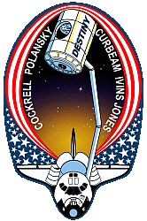
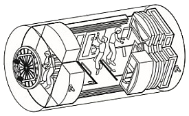

International Space Station (iss)
destiny (u.s. laboratory module)
Destiny is berthed to the forward port of Node 1. (Unity) and rear port of Node 2. (Harmony). Destiny supports the Integrated Truss Structure (ITS)

Destiny is berthed to the forward port of Node 1. (Unity) and rear port of Node 2. (Harmony). Destiny supports the Integrated Truss Structure (ITS)
The U.S. built Laboratory Module, called Destiny, is the main science section of the International Space Station. The crew work inside the pressurized module to conduct research in numerous scientific fields in the near-zero gravity of space. Scientists throughout the world will use the results to enhance their studies in medicine, engineering, biotechnology, physics, materials science, and Earth science.
Destiny also houses equipment used for running other sections of the Station and for operating the Station's robot arm (Canadarm2).
The station truss, The Integrated Truss Structure (ITS), which supports the U.S. Solar Arrays, is attached to the top of Destiny.
Destiny's rear docking port is permanently berthed to the forward port of Node 1. (Unity) and its forward port is permanently berthed to Node 2. (Harmony).
The Destiny laboratory module consists of three cylindrical sections and two end-cones with hatches that are mated to other station components. It is pressurised to match the other station modules.
Destiny is fabricated of aluminium with an exterior waffle pattern that strengthens the hull. The exterior is covered by a debris shield blanket made of a material similar to that used in bulletproof vests on Earth.
A thin aluminium debris shield was then placed over the blanket for additional protection.
Destiny contains the following main mechanisms to support the operation of the Station:-
Common Berthing Mechanisms (CBMs) either passive (PCBM) or active (ACBM) - One PCBM in its aft port which is latched to the ACBM in Unity's forward port. This berths Destiny to Unity. There is also one ACBM in its forward port which is latched to the PCBM in Harmony's rear port. This berths Harmony to Destiny.
Hatches - Each of the two berthing ports on Destiny contains a hatch. Both hatches remains open unless a situation arises requiring a module to be isolated. Each hatch has a window and can be opened or closed from either side and a pressure inter lock feature, which prevents the hatch from being opened if there is a negative pressure across the hatch (higher pressure on the outside of the hatch).
Laboratory window shutter: - An optical quality window (50.9 cm diameter) is located on one side near the center of the module. When the window is not in use an external shutter protects it from potential micrometeoroid and orbital debris strikes. The shutter is manually opened by the crew. The window is principally for Earth science observations.
Destiny supports experiments and studies in a number of science and engineering disciplines. These experiments will allow scientists to better understand our world, ourselves and prepare for future missions to the Moon and Mars.
Typical experiments and research include the following:-
Experiments:
Microgravity research
Human life science
Fundamental biology and ecology
Earth observations and photography
Space science
Commercial applications.
Research facilities:
Minus Eighty Laboratory Freezer
Microgravity Science Glove box
Window Observational Research Facility
Human Research Facility:
- Psychological evaluations
- Neural response experiments.
Destiny contains 23 System and Experiment Racks for it's science functions. six are located on the port side, six on the starboard side, six overhead and five on the deck.
System Racks (11) - House, in removable modular units, the system hardware which provides life-sustaining functions. These include: electrical power, cooling water, air revitalization, temperature and humidity control.
Experiment Racks (12) - provide platforms for a variety of scientific experiments brought to the Station on subsequent missions.
Rack standoffs (4) - provide space for ducting, piping and wiring to be run to/from the individual racks. The racks interface to these via outlets and ports located at the base end of each rack.
Vestibule jumpers are located between Unity and Destiny to connect the piping and wiring between them.
Destiny provides the following facilities for the operation and management of the Station:
Environmental Control and Life Support (ECLSS) - maintains a pressurized habitable environment within the ISS by:-
* Supplying correct amounts of oxygen and nitrogen
* Controlling the temperature and humidity
* Removing carbon dioxide and other atmospheric contaminants
* Monitoring the atmosphere for the presence of combustion products
* Collecting, processing, and storing water removed from the ISS atmosphere
* Fire detection and suppression, Vacuum system.
Thermal Control System (active and passive) - activates the early external and internal thermal control systems to accommodate the addition of Destiny's thermal loads.
Guidance, Control and Navigation - The Motion Control System was improved with the Destiny's control of the gyroscopes mounted in the Z1 truss. The U.S. segment Guidance, Navigation and Control System takes control of the ISS with state vector and attitude inputs from the Russian segment. The Russian segment propulsive capability is still needed for joint attitude control during CMG de-saturation and for re-boost. The Motion Control System is now integrated between Zvezda and Destiny's computers.
The Russian segment continues to manage its own modules while interfacing with the U.S. segment Motion Control System for certain data and operations. The Node 1 MDM Node control software continues to provide closed-loop control of environmental, heater, thermal systems and power for Unity, the PMAs, and truss segments. Destiny's MDM architecture controls the rest of the U.S. on-orbit segment.
Communication and Tracking - includes: Audio system, Video system, Space-to-space communication system, Ku-band, S-band systems. The Communication and Tracking system activated high-data rate S-band to replace the early com system. The audio system comes on-line and the hardware for Ku-band, UHF and the video distribution system were delivered with Destiny but not activated until future missions.
The S-band system provides two-way communications with the ISS and the Mission Control Center via the Tracking and Data Relay Satellite System. This is used for commands and system telemetry, voice and file transfer. The internal audio sub-system allows crew members to communicate with each other aboard the ISS.
Electrical Power System (EPS) - manages, controls, and distributes electrical power to the U.S. pressurized modules. It received all the new electrical loads in the laboratory. Power is brought to Destiny from the P6 array through the Z1/Destiny umbilical tray. The power is brought to two DC-to-DC converter units in Destiny and is distributed to the secondary power distribution assemblies and downstream loads.
Command and Data Handling System - gained 11 MDMs with the installation of Destiny. These MDMs are used to control the U.S. on-orbit segment systems including pay loads.
External Stowage Platforms (ESPs) hold equipment and spare parts for use in the non-pressurised sections of the Station. They are then accessible to crew during "Space Walks". ESP-1 is installed on the port side of Destiny.
Destiny was was transported to the Station and installed during U.S. Space Shuttle Atlantis mission STS-98 [Flight 5A] in February 2001. It was lifted from the cargo bay by the shuttle's robotic arm and attached to the forward port of Unity.
Atlantis' crew members completed external out fitting during a space-walk (EVA).
Following Destiny's installation to Unity, the shuttle's robot arm was used to remove Pressurised Mating Adaptor 2 (PMA-2), from its temporary location on the Z1 Truss and attach it to Destiny's forward Common Berthing Mechanism (CBM). PMA-2 will be used for docking shuttles to the Station on future missions.
Computer commands were then sent from Atlantis to complete the final latching to permanently berth Destiny to the Station.
The following space walks were made by shuttle crew members during the installation of Destiny:-
EVA-1 - Mission Specialists Tom Jones and Bob Curbeam connected umbilical cables to provide power and data capability between Destiny and the ISS.
EVA-2 - PMA-2 was moved to Destiny's forward port. The space-walkers then worked together to remove the laboratory Power Data Grapple Fixture (PDGF) from the orbiter sidewall and install it on Destiny. The PDGF will be used by the Space Station Remote Manipulator System (Canadarm2) the Station robotic arm (Mission 6A).
EVA-3 - The spare S-Band Antenna Support Assembly was moved from the orbiter to the ISS stowage site; the window shutter on the lab was installed and PMA-2 umbilicals to the lab were connected.
The Station crew completed the Node 1. (Unity) to Destiny vestibule out fitting while the U.S. Space Shuttle Atlantis Astronauts were space walking. Together these connections permitted the lab activation upon completion of the space walk. The following table shows the detail steps of the sequence and the crews responsible.
| Step | Rationale | Done by |
| 1 | Activates the converters in the Lab DDCUs to provide secondary power to the Lab systems | Atlantis crew |
| 2-3 | Once the DDCUs are on, there is no need to have the Node 1 MDMs be the bus controllers on the
CB GNC-1 and CB GNC-2. The Config 9 command is sent to each of the Node 1 MDMs so that once power is applied to the C and C MDM, it will not see any BCs on the GNC buses, and it will automatically transition to Primary. |
Atlantis crew |
| 4-5 | The configuration command sent to the Primary Node 1 MDM will likely cause a loss of connection with
the EPCS as well as the OIU. These interfaces are re-established so the procedure can continue. |
Atlantis crew |
| 6 | The RPCs are closed that provide power to the CandC1 MDM. It should initialize and transition to Primary
in approximately 4 minutes. |
Atlantis crew |
| 7-8 | The status of the CandC1 MDM is checked to verify that it is nominal. The ISS crew will have direct
connectivity through a PCS machine once the CandC1 MDM transitions to Primary, providing extra insight to the orbiter crew. |
Atlantis crew |
| 9 | The ISS crew can then perform the procedures to re-establish LDR S-band which was lost during the
vestibule connections made on FD-5. |
ISS crew |
| 10 | The N1-1 MDM is commanded to be an RT on the LB SYS-LAB 1 bus since it no longer needs to be
BC, and the INT MDM will be expecting to find no BC on that bus when it is powered up. |
Atlantis crew |
| 11 | The INT2 MDM is powered up by closing the appropriate RPCs that allow power to the MDM.
The N1-2 MDM must become an RT on the LB SYS-LAB 2 bus within 2 minutes of powering on the INT2 MDM so that the INT2 MDM will transition to the Operational mode. |
Atlantis crew |
| 12-13 | The configuration command sent to the Primary Node 1 MDM will likely cause a loss of connection with
the EPCS as well as the OIU. These interfaces are re-established so the procedure can continue. |
Atlantis crew |
| 14 | The status of the INT2 MDM is checked after the approximate 4-minute initialization time.
Once again, the ISS crew member through the PCS machine has a little more insight into the status of the MDM than the orbiter crew. |
Atlantis
and ISS crews |
| 15 | The Node 1 MDMs should already be synced to the broadcast time coming from the CandC1 MDM. | Atlantis crew |
| 16 | The pass-thru interface is commanded that will allow the CandC1 MDM to be the recipient of all
commands from the orbiter AFD PCS, and will also flow telemetry from the CandC1 MDM to the OIU and AFD PCS through the Node 1 MDMs. |
Atlantis crew |
| 17 | The OIU format is reloaded to accept the data stream coming from the CandC1 MDM rather than the
Node 1 MDM. |
Atlantis crew |
| 18 | The orbiter crew must now set up a PCS machine in the AFD to communicate with the CandC1 MDM. | Atlantis crew |
| 19-21 | The LA MDMs are powered on. After the 2-minute initialization is complete, their status is verified. | Atlantis crew |
| 22 | Bus communication is enabled to the RPCMs to prepare for closing various RPCs. | Atlantis crew |
| 23-26 | RPCs are closed applying power to pieces of MTL and LTL equipment in preparation for IATCS startup. | Atlantis crew |
After Destiny was initially activated and active cooling had been established to the avionics, the ground controllers took over operations of the laboratory systems and carried out the following steps to complete activation of the module:
* Pressure Control Assembly (PCA) activated
* Smoke detectors activated
* Common Cabin Air Assembly started to provide inside air circulation and scrubbing
* Guidance, Navigation and Control Multiplexer/De-multiplexers (MDMs) activated and loaded with software
* Power Management Controller Unit MDMs checked out
* Emergency Egress Lighting batteries begin charging
* Laboratory's interior lights activated
* Condensation (shell) heaters activated
* Survival heaters de-activated
* Audio equipment in Destiny activated and checked out
On the following day the Control Moment Gyros (CMGs) were prepared for spin-up.
The Expedition One crew members then entered Destiny and began out fitting the laboratory.